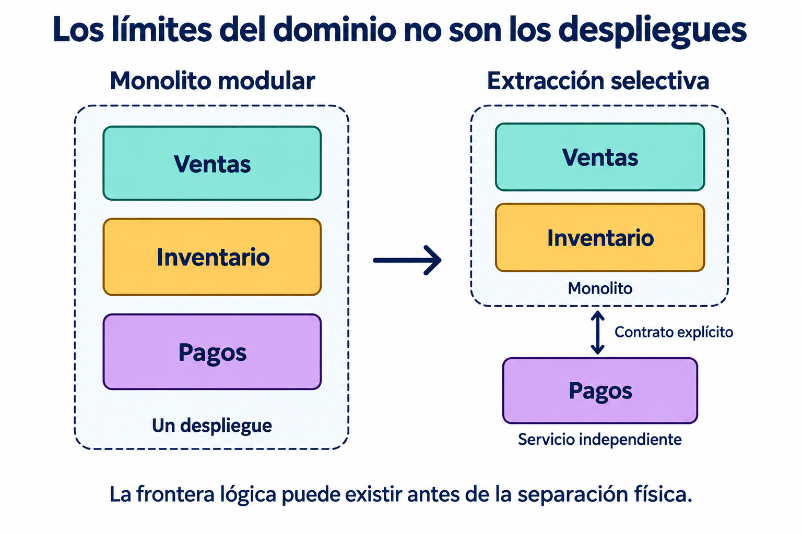
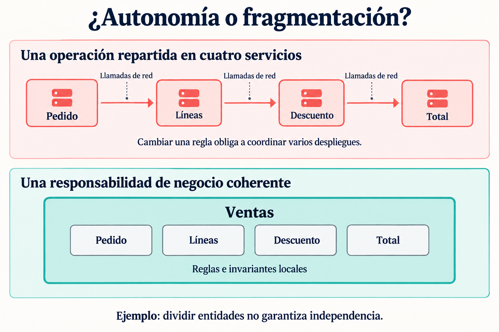

Dividir una aplicación es fácil. Dividirla de manera que cada parte pueda cambiar sin arrastrar a las demás exige entender el negocio.
Imaginemos un equipo que extrae del monolito cuatro servicios: pedidos, líneas de pedido, descuentos y totales. El diagrama parece ordenado. Sin embargo, incorporar una promoción requiere modificar tres repositorios, coordinar despliegues y seguir una cadena de llamadas para descubrir por qué falla una compra.
La aplicación tiene más piezas, pero el equipo sigue trabajando sobre una única unidad de cambio. Ahora, además, esa unidad depende de la red.
El paso de un monolito modular a microservicios empieza por una decisión anterior a la infraestructura: qué reglas pertenecen juntas y qué responsabilidades pueden evolucionar con autonomía. Domain-Driven Design (DDD) aporta herramientas para explorar esa frontera. El tamaño del servicio viene después.
1. Separar el modelo y separar el despliegue son dos decisiones
Un bounded context, o contexto delimitado, define dónde tiene validez un modelo de dominio y su lenguaje. Dentro de ese límite, los conceptos deben conservar un significado coherente. Entre contextos puede ser necesario traducirlos. Esta es la función del patrón en el diseño estratégico de DDD, como explica Martin Fowler en Bounded Context.
Conviene distinguir cuatro conceptos:
- Subdominio: una parte del problema de negocio, como gestionar existencias o procesar cobros.
- Bounded context: el límite dentro del cual construimos un modelo coherente para abordar parte de ese problema.
- Módulo: una unidad de organización y encapsulación del código que puede ayudar a implementar ese límite.
- Microservicio: una unidad que se ejecuta y despliega de forma independiente, con las responsabilidades operativas que eso implica.
Varios contextos pueden convivir en un mismo monolito modular. Un contexto también puede implementarse mediante varios servicios si existe una razón concreta. Ni el contexto, ni la entidad, ni el agregado se convierten automáticamente en un despliegue.

El monolito modular permite poner a prueba esas fronteras mientras mover comportamiento sigue siendo relativamente sencillo. Esa ventaja de aprendizaje está detrás de la propuesta Monolith First. La modularidad, de todos modos, hay que construirla y sostenerla: una colección de carpetas no alcanza.
2. Empezar por las decisiones del negocio
Antes de dibujar servicios, conviene recorrer casos concretos con quienes conocen la operación: tomar una compra, reservar unidades, rechazar un cobro, cancelar una entrega. Para cada paso, hay que identificar quién decide, qué información necesita y qué regla debe preservar.
El análisis de dominio propuesto por Microsoft parte de las capacidades del negocio y del lenguaje compartido con sus expertos. Los contextos se identifican antes de elegir los servicios.
En nuestra tienda de ejemplo, el mapa inicial podría ser este:
| Contexto | Decisión que le pertenece | Información bajo su autoridad |
|---|---|---|
| Ventas | Qué compra acepta y bajo qué condiciones. | Pedido, importes acordados y estado comercial. |
| Inventario | Qué unidades puede comprometer. | Existencias, reservas y vencimientos. |
| Pagos | Cómo procesa y registra un intento de cobro. | Operaciones, resultados y referencias del proveedor. |
Incluso una palabra compartida cambia de significado. Para Ventas, un producto es algo ofrecido bajo determinadas condiciones; para Inventario, es una referencia cuyas unidades se almacenan y reservan. Pueden compartir un identificador sin compartir la misma clase ni todas sus reglas.
Ese cambio de significado ayuda a detectar una frontera. Después hay que comprobar si las responsabilidades y las dependencias sostienen la separación.
3. Seis criterios para trazar un límite útil
¿Qué necesita permanecer consistente?
Una invariante es una regla que debe mantenerse válida al completar una operación. En DDD, un agregado reúne los elementos cuyo cambio debe controlar conjuntamente para proteger esas reglas. Es una frontera de consistencia dentro del modelo; no equivale a todo el contexto. La guía de DDD táctico desarrolla esta distinción.
En el ejemplo, al aceptar un pedido deben quedar guardadas sus líneas y sus condiciones económicas acordadas. Extraer el cálculo del total a otro servicio solo porque tiene una clase propia podría convertir una regla local en una coordinación remota.
La pregunta decisiva es: ¿el negocio admite un estado intermedio y sabe cómo resolverlo? Si no lo admite, conviene revisar el corte. Si lo admite, esa transición debe formar parte explícita del diseño. Una transacción enorme heredada tampoco demuestra que todo pertenezca al mismo contexto: puede estar mezclando reglas que toleran resolverse por separado.
¿Qué cambia junto y por qué?
Conviene tomar cambios recientes y seguir su recorrido. Si modificar una política de descuentos exige tocar pedidos, líneas y totales, hay evidencia de cohesión entre esas piezas. Si cambiar el proveedor de pagos apenas afecta su integración, aparece una oportunidad distinta.
Esta es una heurística de diagnóstico: la frecuencia de cambios conjuntos sirve cuando también entendemos su causa. Una librería compartida mal diseñada puede forzar cambios simultáneos entre responsabilidades que sí deberían separarse. El historial muestra dónde investigar; no decide la arquitectura por sí solo.
¿Quién tiene autoridad sobre los datos?
En nuestra tienda, Ventas puede pedir una reserva, pero Inventario decide si la concede. Ventas no debería actualizar directamente el campo de stock. Esa autoridad tiene que quedar protegida por una interfaz, incluso dentro del monolito.
Al extraer servicios, los datos persistentes de cada uno deben permanecer privados. Esto no exige un servidor de base de datos por servicio: pueden usarse esquemas o tablas privadas con permisos adecuados, aunque compartir infraestructura mantiene riesgos operativos comunes. El patrón Database per Service describe estas opciones.
Una copia de consulta puede ser válida. Por ejemplo, Ventas puede conservar una descripción y el precio acordados al comprar. Hay que definir qué copia es histórica, cuál se actualiza y quién resuelve una discrepancia.
¿Cuánta conversación cruza la frontera?
Una operación como reservarUnidades(pedidoId, cantidades) expresa una intención de negocio. Una secuencia remota de leer stock, restar unidades y guardar el resultado obliga al consumidor a conocer reglas internas y abre problemas de concurrencia.
Las llamadas frecuentes y pequeñas, junto con la necesidad de desplegar varios servicios a la vez, son señales para revisar el límite. La guía de identificación de microservicios recomienda evaluar precisamente esa conversación y la independencia de despliegue.
Para nuestro checkout, mediría cuántas dependencias remotas bloquean la compra y cuánto agregan a su latencia. Una llamada necesaria puede ser razonable; diez intercambios para reconstruir un pedido merecen otra conversación de diseño.
¿Qué beneficio concreto aporta otro despliegue?
Supongamos que Pagos necesita publicar cambios de integración con mayor frecuencia y controlar por separado sus recursos. Esa necesidad puede justificar una extracción. Pero hay que formular el resultado esperado: reducir la espera para publicar esos cambios, contener ciertos fallos o ajustar capacidad sin replicar toda la aplicación.
El aislamiento depende del flujo. Si cada compra espera sin límite a Pagos, su caída seguirá afectando al checkout. Separar procesos permite construir aislamiento; no lo garantiza.
¿Quién puede operarlo de principio a fin?
Un candidato necesita responsables que puedan modificarlo, desplegarlo, observarlo y responder cuando falla. El costo incluye alertas, compatibilidad de contratos, secretos, recuperación y seguimiento de incidentes.
Fowler plantea la automatización de despliegues y la capacidad de monitoreo entre los prerrequisitos operativos de los microservicios. En un equipo pequeño, conservar módulos juntos puede ser una decisión acertada mientras esa capacidad madura.
4. El nanoservicio aparece cuando la autonomía no compensa la fragmentación
Uso aquí nanoservicio para describir una unidad de despliegue cuya responsabilidad resulta demasiado fragmentada para la coordinación que introduce. No hay una cantidad universal de líneas de código que permita identificarlo.
En el checkout inicial, Pedido, Líneas, Descuento y Total son sospechosos porque cada cambio relevante recorre varias piezas. El servicio de Total podría ser diminuto y estar perfectamente probado; aun así, puede resultar una mala frontera.

Antes de sostener esa división, plantearía tres pruebas:
- Prueba del cambio: incorporar una promoción y comprobar cuántos equipos y despliegues deben coordinarse.
- Prueba del fallo: interrumpir una dependencia y observar qué puede seguir funcionando y qué estado ve el usuario.
- Prueba del contrato: explicar qué promete cada servicio sin describir sus tablas ni sus clases internas.
Estas pruebas son una propuesta práctica para el ejemplo, no una fórmula de DDD. Si exponen una dependencia permanente, conviene ampliar el límite o rediseñar la interacción. Un servicio pequeño puede ser útil; tiene que justificar su existencia como unidad operable.
5. Desacoplar contextos antes de moverlos a la red
Volvamos al monolito. Supongamos que Ventas lee tablas de Pagos, interpreta sus códigos y modifica el pedido dentro de la misma transacción. Antes de extraer Pagos, conviene hacer visibles esas dependencias.
Un primer paso sería introducir un contrato con operaciones como solicitarCobro y consultarResultado. Pagos concentra la traducción de códigos del proveedor a resultados que el resto del sistema entiende. Ventas deja de depender de detalles de esa integración.
El mapa de contextos debe documentar quién publica ese contrato, quién lo consume y cómo se negocian cambios. Cuando un modelo externo amenaza con imponer sus conceptos, una capa anticorrupción puede traducirlos y proteger el modelo propio. Es uno de los patrones de integración recogidos en la referencia de DDD de Eric Evans.
Los eventos también requieren un contrato. PagoConfirmado comunica un hecho de negocio; el consumidor necesita saber qué garantiza, cómo se identifica y qué versiones entiende. Cambiar llamadas por mensajes no elimina la dependencia semántica.
6. La consistencia eventual debe poder explicarse al negocio
Imaginemos que la tienda acepta una compra inicialmente pendiente. Un flujo posible sería:
- Ventas registra el pedido pendiente, con sus condiciones económicas fijadas.
- Inventario intenta reservar las unidades por un plazo acordado.
- Si la reserva se obtiene, Pagos procesa el intento de cobro.
- El coordinador confirma la compra cuando conoce los resultados necesarios.
- Ante un rechazo definitivo, inicia la cancelación y libera la reserva.
Un timeout no demuestra que el cobro falló. El resultado puede haber quedado desconocido. Por eso, el flujo necesita consultar o reconciliar la operación antes de repetirla, y contemplar qué ocurre si llega una confirmación cuando la reserva ya venció.
Este tipo de coordinación puede implementarse con una saga: transacciones locales y acciones compensatorias. Una compensación es una nueva operación de negocio; no ofrece el rollback ni el aislamiento automáticos de una transacción ACID. Incluso puede fallar y requerir reintentos o intervención.
También hay que resolver cómo publicar los eventos. Con Transactional Outbox, el cambio de estado y el mensaje pendiente se guardan en la misma transacción local. Otro proceso publica el mensaje después. Como puede haber duplicados, los consumidores deben ser idempotentes: procesar otra vez el mismo mensaje no debe repetir su efecto.
En Pagos, además, la clave de idempotencia debe proteger el intento ante el proveedor cuando este lo permita. El flujo necesita plazos, estados visibles y una vía de recuperación. Si el equipo no puede explicar qué verá el comprador durante la espera, todavía falta diseñar parte de la separación.
7. Una extracción que permita aprender
Para llevar estas ideas a una migración, propongo una secuencia incremental:
- Formular una hipótesis. Por ejemplo: extraer Pagos debería permitir cambiar de integración sin esperar un despliegue completo. Registrar cómo se medirá ese beneficio.
- Ordenar la frontera interna. Encapsular reglas y acceso a datos, eliminar accesos cruzados y hacer explícitos los contratos. Incorporar comprobaciones que detecten nuevas dependencias prohibidas.
- Diseñar los fallos. Acordar qué sucede ante timeouts, duplicados, resultados tardíos e incompatibilidades. Verificar el comportamiento observable de esos casos.
- Transferir los datos con un dueño claro. Preparar la carga inicial, sincronizar los cambios necesarios y verificar la consistencia antes del corte. Evitar escrituras independientes en ambas implementaciones sin un mecanismo de reconciliación.
- Redirigir de forma gradual. Mantener identificada qué implementación atiende cada operación. En cobros, comparar lecturas o usar pruebas controladas; duplicar tráfico no debe duplicar efectos.
- Evaluar el resultado. Observar tiempo de entrega, despliegues coordinados, latencia y esfuerzo de operación. Definir cómo volver atrás, incluyendo los datos escritos durante la transición.
Puede que Pagos sea un buen candidato y Ventas e Inventario deban seguir juntos. Puede que el costo de la extracción supere su beneficio y convenga mantener todo como módulos. Ambos resultados son válidos si responden a evidencia del sistema y del equipo.
Un límite útil permite expresar una responsabilidad, proteger sus reglas y cambiarla con una coordinación razonable. Primero hay que encontrar y sostener ese límite. La decisión de desplegarlo por separado debería reforzar esa autonomía.
Antes de extraer el próximo servicio, vale la pena elegir un cambio real del negocio y seguir su recorrido: ¿la nueva frontera lo vuelve más sencillo o agrega otra coordinación al mismo problema?